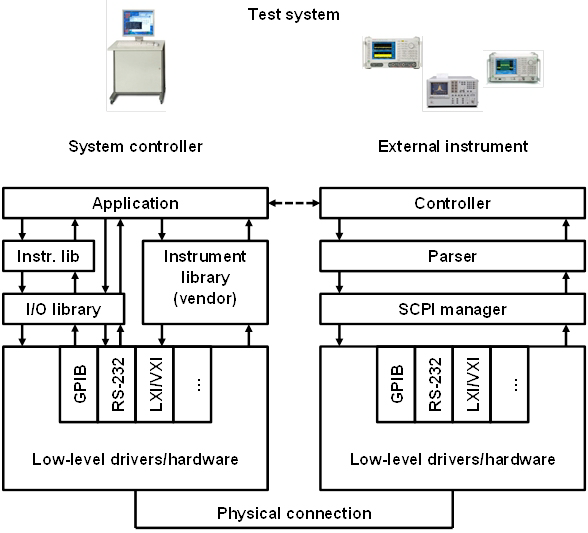

Understanding connectivity to external instruments
Several software layers are involved in providing connectivity between a system controller and external instruments. If you are familiar with this layered structure of connectivity in terms of SICL, SCPI, GPIB, etc. you may wish to skip reading this topic.
Test system architecture
External instruments are instruments that are not integrated in the local ATE system. Connectivity of external instruments follows a layered approach. Software layering shall allow for
- grouping functions that belong together,
- shielding lower level functions from the upper layers and the user,
- reducing the number of mutual dependencies of functions,
- replacing of a software layer or even a complete instrument in the stack by another one with minimum effort.
The following drawing is one abstract model of the stacks that connect external instruments with its remote instrument controller in a test system. As there is no standardized definition of the term "driver" in test-and-measurement industry, there can be as well drawings found with more or less layers depicted, depending on the architecture of the external instruments and its instrument controller.
In this topic, a "(device or instrument) driver" is understood as a set of low-level functions that directly controls hardware. A "(device or instrument) library" is understood as a set of functions that translates application-specific control and communication instructions to a programmable instrument into commands understood by a low-level driver.

System controller layers
The application is the program produced by the user in order to accomplish a test and measurement task on the external instruments. This program typically contains human readable high-level functions such as dmmMeasureVoltage(DCVoltage, read) to control the test system, in this example a command to a Digital Multi-Meter (DMM) to measure DC voltages and to read out the results.
The instruction specified in the application is to be sent to the external instrument. To this end, the instrument library maps the high-level application function to a call to a function that is exposed by the I/O library, for instance gpibWrite(address, instruction). In this example, address is the address of the external instrument and instruction is a Standardized Commands for Programmable Instruments (SCPI) command, for instance MEAS:VOLT:DC. The mapping of the high-level function to a call to the I/O library can be done from the application program as well, in absence of an instrument driver.
As an alternative to this "direct I/O" as described above, the supplier of the external instrument may provide an instrument library that offers the complete instrument-specific control and connection functionality to the application. In this case, the I/O functionality is contained in the instrument library and the connection management is hidden. Initially, these libraries were proprietary to the subject instrument vendor. Meanwhile, these libraries are more standardized to create some independency from hardware but largely adhere to Microsoft computer standards. Note that this approach bases on the presence of an appropriate instrument library provided by the vendor whereas the "direct I/O" relies on the translation of application functions to SCPI strings and the presence of an I/O library being generic to several instruments or classes of instruments.
There are as well Application Development Environments (ADEs) that allow for a mix of "direct I/O" and instrument library functions, even a complete instrument library is provided by the vendor. The motivation to mix can be:
- functionality newly introduced by the vendor is not stable yet
- performance (latency, throughput) is important
- legacy code written in SICL has to be reused.
There are multiple options found in connecting the external instrument to a system controller. Older configurations may employ the following communication protocols:
- General Purpose Instrumentation Bus (GPIB)
- General Purpose Input Output (GPIO)
- serial interface (RS-232).
Newer communication protocols are as follows:
- Universal Serial Bus Test and Measurement Class (USBTMC)
- USB subclass USB488 (USBTMC-USB488)
- Peripheral Component Interconnect (PCI) eXtension for Instrumentation (PXI)
- Versa Module Europe (VME) eXtension for Instrumentation (VXI-11)
- Local Area Network (LAN) eXtension for Instrumentation (LXI)
- High Speed LAN Instrument Protocol extension of LXI (HiSLIP)
- ...
The I/O library exposes an API to the application program that shall be as much as possible independent from the communication protocol used to establish the connection. Historically, the first such I/O library was the Standard Instrument Control Library (SICL) coined by Hewlett-Packard. SICL has been supported up to SmarTest 7 but will not be supported in SmarTest 8 anymore. The Generic I/O (GIO) library replaces SICL in SmarTest 8.
Instrument layers
On the remote instrument side, the received commands are handed over to an SCPI manager. The manager decodes communication protocol messages received and delivers the SCPI commands to the instrument parser. In the native version, this parser produces the hardware-oriented instrument commands to control the instrument. In the case of emulation, the parser produces these commands as well, but now for the emulated instrument. Such emulation is of good for old or replaced instruments.
In the opposite direction, test result data produced by the external instrument are captured, edited, acquired, and parsed to produce an output that can be sent to the system controller application, for example, a table with several rows (time stamps) and columns (measured variables). The instrument parser extracts and assembles the relevant information from the native instrument's result messages. Using the communication protocol stack of the external instrument, the measurement result data are transferred to the system controller.
Functional changes
- Introduced in SmarTest 7.5.0